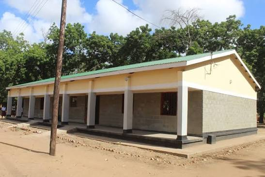
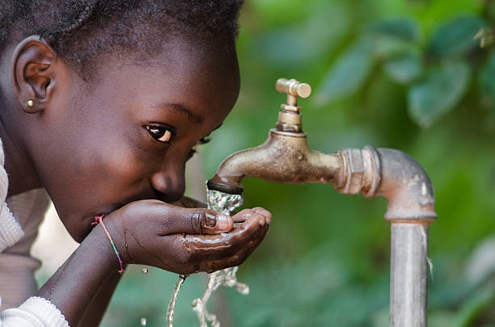
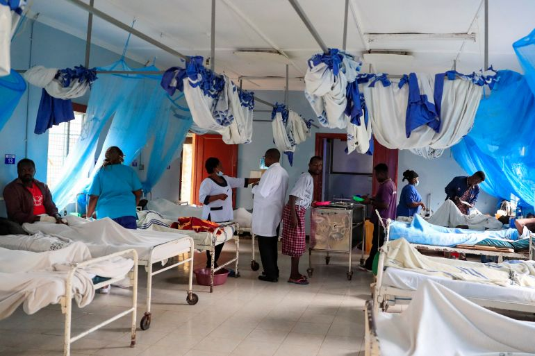
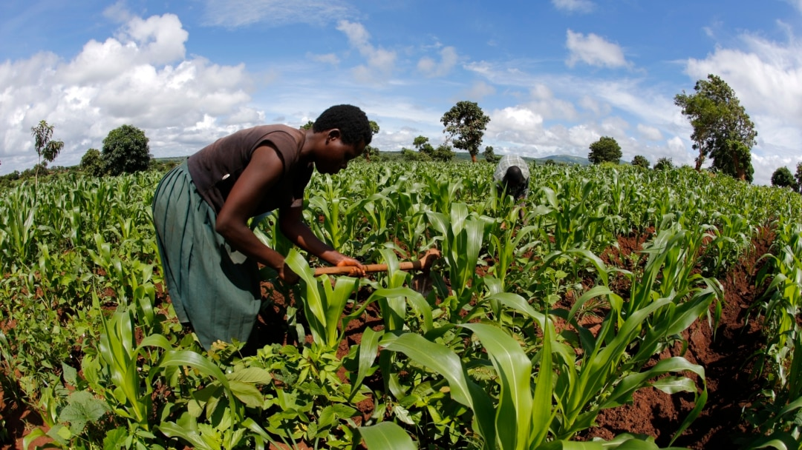
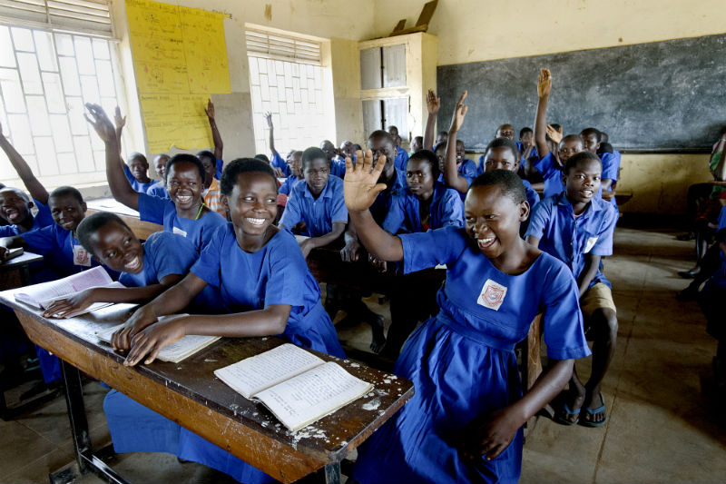
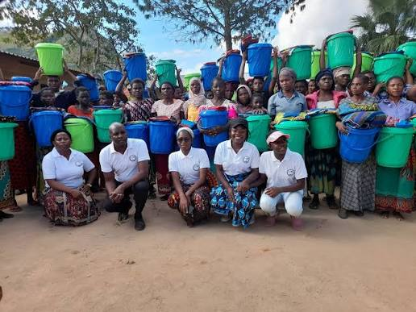

Real impact, real stories - see how your donations are transforming communities

Providing access to quality education for 500+ children in remote communities across Malawi. This project includes constructing classrooms, providing learning materials, and training teachers.

Installing sustainable water systems in 50 villages across Malawi's drought-affected regions. This project provides clean drinking water and sanitation facilities.

Bringing essential healthcare services to underserved communities with mobile health units and community health centres across Malawi.

Supporting small-scale farmers with training, seeds, and tools for sustainable farming and food security in Malawi.

Empowering girls through scholarships, mentorship, and educational resources across Malawi. Breaking barriers and creating opportunities.

Providing immediate food aid, maize, and supplies during natural disasters and emergencies in Malawi.
Your donation directly impacts these communities. Choose a project to support today.